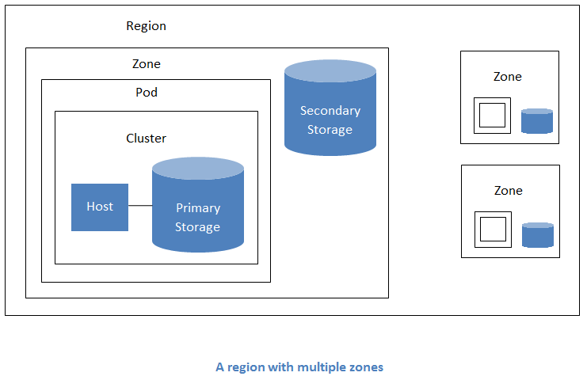
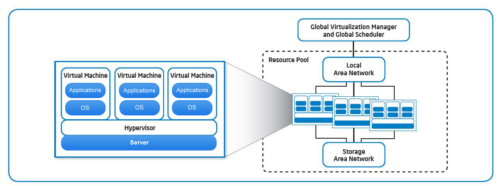
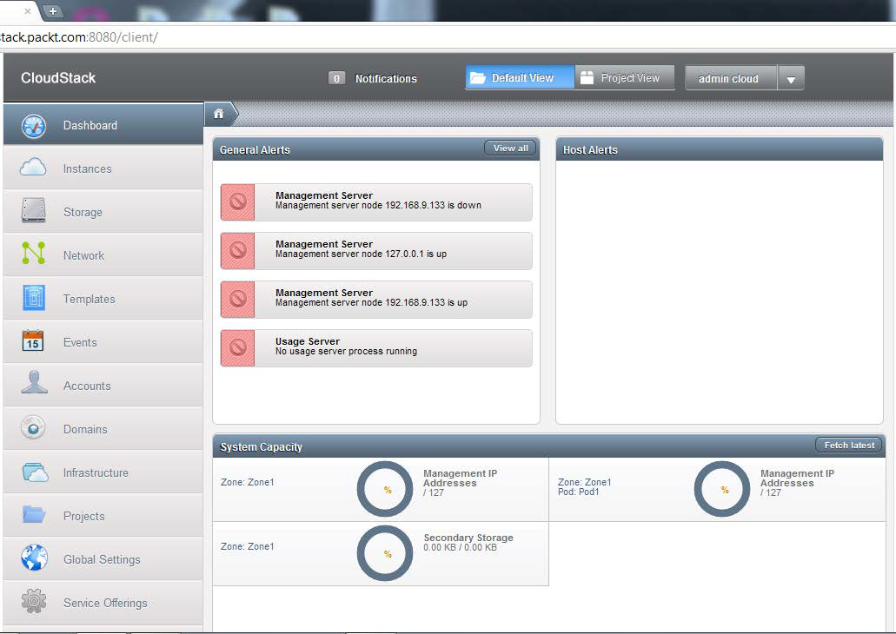

Camada de Infraestrutura
A Camada de Infraestrutura é a camada base e compreende todos os recursos de hardware sobre quais tecnologias de inforamação são construídas. Isto é, incluem recursos de computação, armazenamento, redes e assim por diante.

Regiões:
Uma região é a maior unidade organizacional disponível dentro de uma aplicação CloudStack. Uma região é constituída de diversas zonas disponíveis, onde cada zona é aproximadamente equivalente a um datacenter. Cada região é controlada por seu próprio cluster de Servidores de Gerenciamento, operando em uma das zonas.
A nuvem pode alcançar maior escalabilidade e disponibilidade agrupando zonas em regiões.
Zonas:
Uma zona é a segunda maior unidade organizacional. Uma zona corresponde a um único datacenter. O benefício de organizar a infraestrutura em zonas é fornecer isolamento físico e redundância. Isto permite cada zona ter sua fonte de energia e conexão com rede.
Uma zona consiste de :
- Um ou mais pontos de entrega (pods). Sendo que cada pod contém um ou mais clusters de hospedeiros e um ou mais servidores de armazenamento primário.
- Pode conter um ou mais servidores de armazenamento primário que podem ser compartilhados por todos os pods dentro da zona.
- Armazenamento secundário, que é compartilhado por todos os pods na zona.
Clusters:
Um cluster é o terceiro nível da divisão hierárquica nas aplicações CloudStack. Os hospedeiros são agrupados em grupos lógicos chamados clusters.
Este cluster pode ser um grupo de servidores XenServer ou um conjunto de servidores KVM.
Armazenamento
CloudStack tem duas principais categorias de armazenamento, primário e secundário. Armazenamento primário é usado para fornecer discos para máquinas virtuais hóspedes e está associado ao o cluster do CloudStack Já o armazenamento secundário está associado a um setor, comum a todos os
pontos de entrega (PoDs)
no setor e é usado para armazenar templates, ISOs e snapshots dos volumes dos discos.
Armazenamento primário (Primary Storage):
Armazenamento primário no CloudStack, é comum a um cluster que é usado para fornecer discos a máquinas virtuais hóspedes. Deve ser ressaltado que este armazenamento é único para cada cluster.
Um cluster contém ao menos um servidor de armazenamento primário que é compartilhado entre todos os hospeiros neste cluster.
O servidor de armazenamento é um componente crítico e é usado para hospedar as instâncias das máquinas virtuais dos hóspedes. Ou seja, é basicamente uma máquina com enorme quantidade de espaço em disco, que é variável de acordo com a necessidade do usuário. Pode ser um servidor de armazenamento compartilhado ou local.
Armazenamento Secundário:
Este espaço de armazenamento é usado para armazenas os templates, imagens ISO e snapshots que podem ser usados para implementar infraestrutura IT usando CloudStack. Cada zona tem ao menos um armazenamento secundário que por sua vez é compartilhado entre todos os pontos de entrega nesta zona.
CloudStack também oferece a funcionalidade de automaticamente replicar o armazendo secundário através das zonas de modo que haja tolerância a falha. Diferentemente do armazenamento primário, o armazenamento secundário utiliza apenas NFS (Network File System).
O armazenamento secundário e as máquinas virituais a qual está servindo devem estar localizado na mesma zona e ser acessível por todos os hospedeiros.

Volumes:
Volumes são a unidade dee armazenamento básica do CloudStack. Todo espaço de armazenamento que é fornecido às instâncias hóspedes são dadas na forma de volumes. Estes volumes são criados nos servidores de armazenamento primário já descritos.
O disco raiz das máqinas virtuais dos hóspedes recebe armazenamento na forma de volumes do armazenamento primário que contém todos os arquivos para inicializar o sistema operacional ou armazenamento adicional para guardar dados.
Embora CloudStack não ofereça a funcionalidade de fazer backup do armazenamento primário é fornecida a opção de criar cópias dos volumes individuais na própria unidade de armazenamento primário usando snapshots.
Camada de Gerenciamento
Servidor de Gerenciamento (Management Server):
O servidor de gerenciamento orquestra e aloca os recursos na aplicação nuvem.
Este servidor geralmente opera em uma máquina dedicada ou como máquina virtual e controla a alocação de máquinas virtuais para hospedeiros além de atribuir armazenamento e endereçõs IP para as instâncias das máquinas virtuais.
Alta disponibilidade pode ser assegurada para o CloudDB configurando um cluster MySQL. Configurar CloudStack deste modo, elimina o ponto único de falha uma vez que haverá o servidor de gerenciamento e CloudDB com alta disponibilidade.
O servidor de gerenciamento roda em Apache Tomcat e requer um banco de dados MySQL para ter persistência.
Gerenciador Máquina Virtual:
Todos os pedidos, requerimentos e estados de máquinas virtuais são manejados pelo gerenciador de máquina virtual. Este gerenciador é responsável de administrar oss recursos alocados para as máquinas virtuais.
Gerenciador de Armazenamento:
Responsável por criar, alocar e deletar volumes de armazenamento ou espaço de acordo com pedido dos usuários finais. Gerencia todas as ações relacionadas ao armazenameno dos usuários ou máquinas virtuais e avalia seus respectivos pedidos para então realizar as ações especificadas.
Gerenciador de Rede:
Controla toda rede das máquinas virtuais do ambiente CloudStack.
Possui funções como gerenciamento de endereço IP, balanceamento de carga, configuração de fireweall, entre outras.
Gerenciador de Snapshot:
Quando um usuário requer uma ação para criar uma snapshot ou qualquer outra operação baseada em snapshots, este componente lida com o pedido. Snapshots são utuilizadas para backupse restauração.

Figura: Interface de Gerenciamento
Kernel
O kernel, ou núcleo, é composto de diferentes componentes que executam tarefas em plano de fundo. É essencial na distribuição, integração e tratamento de tarefas.
O núcleo distribui as tarefas entre diversos outros componentes do CloudStack, controla operações extensas das máquinas virtuais, sincroniza os recursos e banco de dados além de gerar eventos que são capturados por outros componentes.
Cloud DB
É o banco de dados MySQL primário usado pelo servidor de gerenciamento para armazenar todas informações de configuração.
CloudDB pode ser instalado tanto no mesmo servidor quanto em um servidor distinto.
Deste modo, CloudDB é um componente crucial para o funcionamento da aplicação CloudStack visto que contém informação de oferta, hosts, perfis, credenciais de contas, informação de configuração e rede, etc.